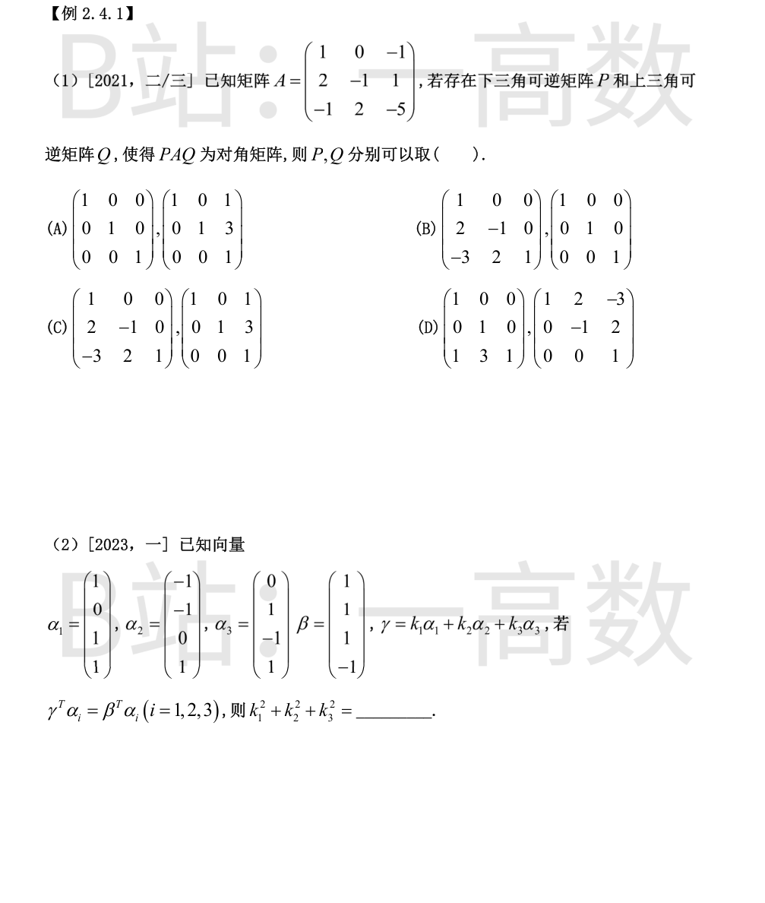
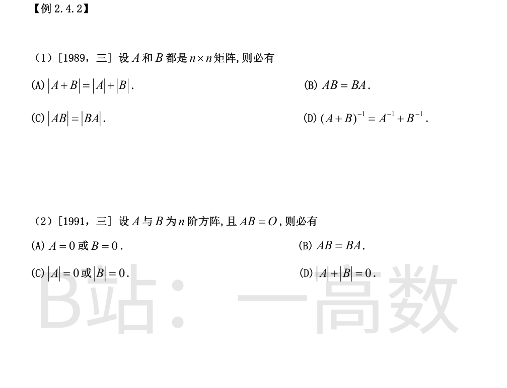

PAQ 为对角阵，即用倍加型初等行变换（下面行加减上面行的倍数）与初等列变换（前面列加减后面列的倍数）把 A 化为对角阵。
对 A 作行变换 r_2-2r_1，r_3+r_1，r_3+2r_2，合并得
$$P=\begin{pmatrix}1&0&0\\2&-1&0\\-3&2&1\end{pmatrix},\qquad PA=\begin{pmatrix}1&0&-1\\0&1&-3\\0&0&0\end{pmatrix}.$$
再作列变换 c_3+c_1，c_3-3c_2，即取
$$Q=\begin{pmatrix}1&0&1\\0&1&3\\0&0&1\end{pmatrix},\qquad PAQ=\begin{pmatrix}1&0&0\\0&1&0\\0&0&0\end{pmatrix}$$
为对角阵，且 P 为下三角可逆、Q 为上三角可逆。排除法：(A) 中 P=E，AQ 的 (2,1),(3,1),(3,2) 元非零；(B) 中 Q=E，PA 的 (1,3),(2,3) 元非零；(D) 中 PAQ 的 (1,2) 元 =2\ne0。故选 (C)。
条件即 (γ-β)^{T}α_i=0（i=1,2,3）。设 γ=k_1α_1+k_2α_2+k_3α_3，两边与 α_i 作内积，条件化为
$$\sum_j k_j\,\alpha_j^{T}\alpha_i=\beta^{T}\alpha_i.$$
计算：α_1^{T}α_1=3，α_2^{T}α_2=3，α_3^{T}α_3=3，且 α_i^{T}α_j=0（i\ne j，两两正交）。而
$$\beta^{T}\alpha_1=1+0+1-1=1,\qquad \beta^{T}\alpha_2=-1-1+0-1=-3,\qquad \beta^{T}\alpha_3=0+1-1-1=-1.$$
故 3k_1=1，3k_2=-3，3k_3=-1，即 k_1=\tfrac13，k_2=-1，k_3=-\tfrac13，
$$k_1^2+k_2^2+k_3^2=\tfrac19+1+\tfrac19=\tfrac{11}{9}.$$

由行列式乘法定理：|AB|=|A|\cdot|B|=|B|\cdot|A|=|BA|，(C) 必成立。
(A) 错：如 B=-A 时 |A+B|=0\ne|A|+|B|；(B) 错：矩阵乘法无交换律；(D) 错：逆无分配律（如 A=B=E 时左端 E/2、右端 2E）。
AB=O \Rightarrow |AB|=|A|\cdot|B|=0，故 |A|=0 或 |B|=0，选 (C)。
反例说明其余不对：取 A=\begin{pmatrix}1&0\\0&0\end{pmatrix}，B=\begin{pmatrix}0&0\\0&1\end{pmatrix}，则 AB=O 但 A\neO、B\neO（(A) 错），且 AB\neBA 此处相等、换用 A=\begin{pmatrix}0&1\\0&0\end{pmatrix}, B=\begin{pmatrix}1&0\\0&0\end{pmatrix} 得 AB=O 而 BA\neO（(B) 错）；再取 A=O，B=E，则 AB=O 而 |A|+|B|=1\ne0（(D) 错）。